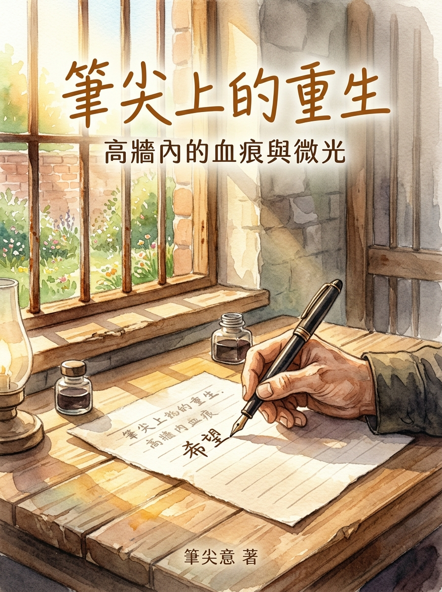

第一部作品：《高牆內的血痕與微光》
—— 阿玉的監管悔思錄：從深淵迷途到字字血淚的生命救贖
『筆尖上的重生』計畫，是一場旨在為受監管朋友們點亮希望的行動。這項計畫並不滿足於單純的物質協助，而是深信「授人以漁」的力量，致力於傳授科技寫作的技能，讓參與者能透過筆尖重新梳理過往的挫折與跌宕，將其化作激勵人心的故事，並在此過程中重拾被遺忘的自信與尊嚴。
計畫不僅鼓勵參與者揮灑文字，更實際協助他們發行電子書進行預售。即使身處行動受限的環境，他們依然能透過創作展現自我價值，不僅為自己開創了信心，也創造了未來的經濟收入。

透過寫作直面過往錯誤，將悔恨化為自我救贖與警世故事。
在高牆受限環境中依然能展現才華，為未來重返社會奠定基礎。
所得全額挹注受監管者醫療補助、生活支持與後續出版基金。
—— 阿玉的監管悔思錄
人生走錯一步，代價往往比想像中沉重。阿玉因一時迷惘輕信他人，淪為詐騙集團的「車手」。當鐵門重重關上，高牆隔絕了外面的繁華，迎接他的不是解脫，而是無盡的懺悔、身體的劇痛，以及對家人深深的愧疚。
高牆內的鐵門「碰」地一聲關上，那沉悶的金屬撞擊聲，彷彿隔絕了阿玉過往所有的自由與尊嚴。
阿玉坐在硬邦邦的木板床上，看著雙手。這雙手曾經抓過生活的希望，卻也因為一時貪念與糊塗，接下了詐騙集團那沉甸甸的髒錢。身為「車手」的代價，就是監禁，以及永無止境的內疚。
「阿玉，別發呆了，今天輪到我們這房幫忙照顧阿嬤。」同房的獄友拍了拍他的肩膀。
監所內盛夏的悶熱如同一層厚厚的濕布，緊緊裹住每一個人。這座設施早已嚴重大爆滿，原本設計容納幾個人的狹小舍房，如今硬生生地擠進了十多個人。十幾個成年男子的體溫、汗水與窒息感混雜在一起，夏夜裡的空氣幾乎是不流動的。
更棘手的是，房裡還有一位患有嚴重失智症的年邁老婦人。老人家無法自理生活，需要舍房內的房友們輪流貼身照料。那段日子，監所內爆發了嚴重的「疥瘡」傳染，許多人皮膚潰爛、痛苦不堪。
阿玉極力提防，每天小心翼翼地衛生防護，慶幸自己終於避開了疥瘡的浩劫。然而，命運卻給了他另一場更為殘酷的考驗。
雖然躲過了疥瘡，但因舍房內空氣極度不流通，加上環境潮濕與情緒高度壓抑，阿玉體內的濕疹在今年特別凶猛地爆發了。
那不是尋常的皮膚癢，而是一種像是萬千蟻蟲在骨髓裡啃噬的劇痛與劇癢。
「不能抓……抓了會感染……」
阿玉在無數個漆黑的夜晚咬緊牙關，強迫自己忍住。但當深夜意識模糊時，他的雙手卻不受控制地在皮膚上狂抓。
到了清晨，當微光透過高牆微小的鐵窗灑進來時，阿玉低頭看著自己的內衣——那白色的棉衫上，早已沾滿了一道道怵目驚心的風乾血痕。
「每個禮拜都要看一次醫生，藥擦了又乾，乾了又破……」阿玉看著自己發紅潰爛的肌膚，心中的苦澀遠勝過身上的皮肉之痛。身上的血痕，就像是他心中揮之不去的罪惡感，日夜提醒著他的錯誤。
他知道，自己在外面犯的錯，拖累了最疼愛他的四姨與姨丈。
民國115年（2026年）8月16日，父親節剛過不久。
阿玉趴在狹窄的木桌邊，借著微弱的光線，鋪開了一張紅格信紙。他的手指因為濕疹而略顯腫脹，握著筆的手微微發抖。
他想起了上個月，姨丈冒著酷暑去郵局匯給他的三千元新台幣。
在監所裡，三千元是一筆大數目。但面對週週看診的掛號費、自費藥品，以及購買洗沐用品、衛生紙等基本生活必需品，這三千元轉眼間便所剩無幾，口袋裡只剩下最後的幾百元。
「又來了……又得開口向家裡要錢了……」
阿玉內心充滿了恥辱與煎熬。他知道外面的經濟景氣很差，大家生活都不容易，他甚至曾寫信給外面的「牛哥」，了解家裡的艱難。
他咬著唇，一字一句地在信紙上刻下內心的誠懇與哀求：
「四姨、姨丈：收信快樂，祝姨丈父親節快樂！」
「上次信裡面提到監所所有人得到疥瘡，我已經用心去提防了，但因為那阿嬤失智要輪流舍房照顧，所以我雖然沒有得到疥瘡，但濕疹今年特別嚴重，全身抓到衣服都是血，每個禮拜看一次醫生……」
「能否請阿姨再幫我寄1至2年……我真的不是故意要得濕疹，監所現在大爆滿，每房都睡10幾人，空氣又不流通，請姨別生氣……」
除了醫療與生活的求助，他還懇求家人寄來「20張5元郵票」。這20張郵票，是他通往外面的世界、向家人傳遞懺悔與思念的唯一橋樑。
信快要寫完了，阿玉想起了即將到來的九月中旬。
那是監所舉辦「電話懇親（電懇）」的日子。在漫長而孤獨的管訓生活中，那短短幾分鐘的電話，是支撐他活下去的全部力量。
他小心翼翼地在信紙上交代：
「9月中我有參加電懇，到時候再請姨記得接喔！」
「謝謝親愛的家人」 「PS: 記得用姨丈的名寄！」 「115.8.16 阿玉」
特意叮嚀「用姨丈的名字寄」，是因為行政流程與領取規則的考量，他生怕任何一點點差錯，會讓他收不到這份救命的金錢與藥物。
將信紙折疊好裝入信封、貼上郵票的那一刻，阿玉深深地吸了一口氣。
身上的濕疹依舊刺痛，高牆內的空氣依然悶熱，但他的心似乎稍微安定的些許。他知道，這場高牆下的苦難與血痕，是他洗滌罪孽的必經過程。而遠方家人的包容與那一聲尚未接通的電話，將是他重獲新生時，最堅定的依歸。
這是一場關於翻轉生命的旅程。您的每一次預購與陪伴，都是照亮受監管朋友們改寫生命篇章的光。
銀行代碼：700 (中華郵政) 或 銀行專戶
支持金額：NT$ 99 元（或自由加額贊助）
備註說明：轉帳後請透過表單填寫回報末五碼與接收電子信箱